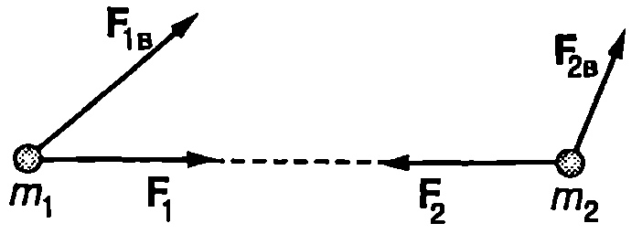
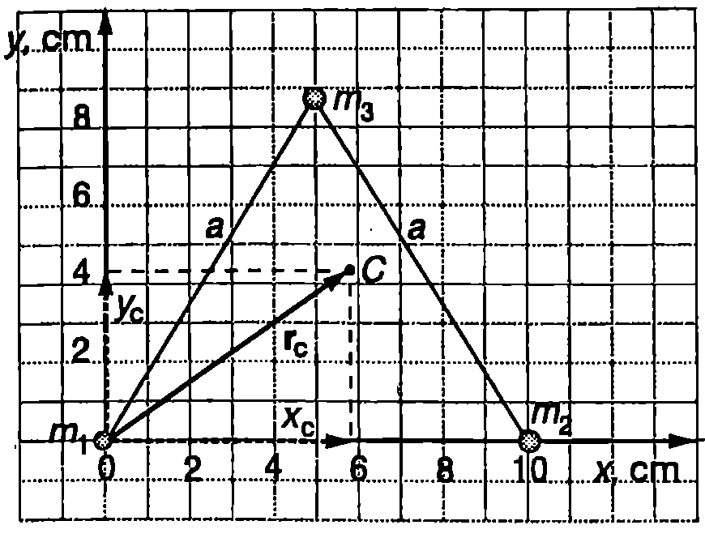
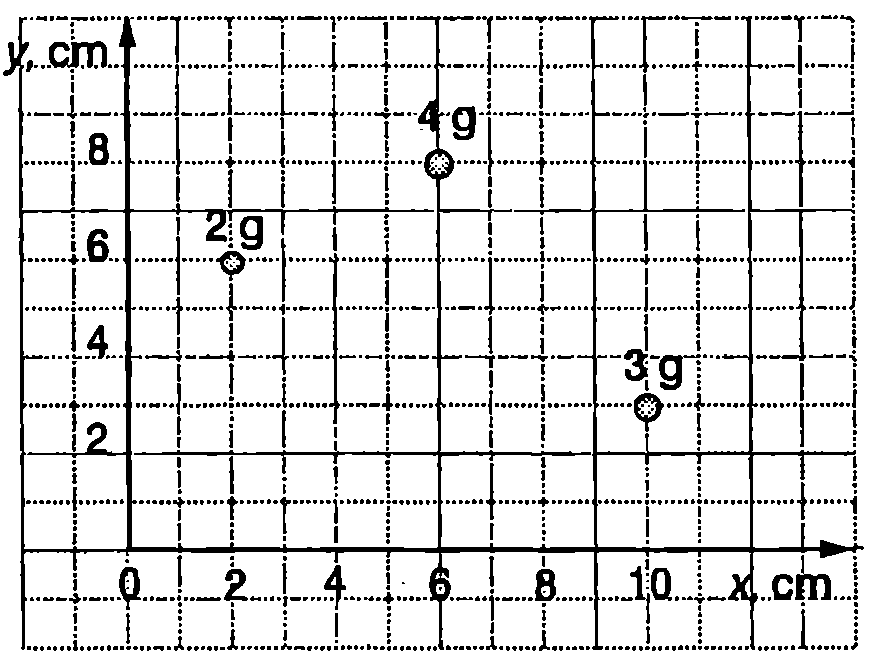
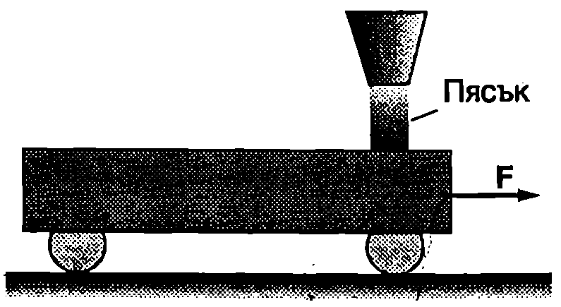

Затворена система
Да разгледаме произволна система от тела (материални точки). Всички останали тела във Вселената, които не влизат в тази система, са външни тела (по отношение на разглежданата система). Силите на взаимодействие между телата от системата се наричат вътрешни сили, а силите, с които външните тела действат на телата от системата външни сили.
Механична система, на която не действат външни сили, се нарича затворена система.
Строго погледнато нито една реална механична система не е напълно затворена, защото околните тела винаги и действат с гравитационни сили. Когато вътрешните сили са много по-големи от външните сили, в редица случаи действието на последните може да се пренебрегне и системата да се смята за затворена. Например при изучаване свободното падане на телата пренебрегваме външните гравитационни сили, с които действат Луната, Слънцето и другите небесни тела и разглеждаме системата тяло - Земя като затворена система.
Закон за изменение на импулса
Ще разгледаме най-проста механична система, съставена от две материални точки, които взаимодействат със сили $\vec F_1$ и $\vec F_2$. На материалните точки действат външни сили $\vec F_\text{1в}$ и $\vec F_\text{2в}$ (Фиг. \ref{fig:10.1}). Записваме уравнението на втория принцип на механиката за всяка от материалните точки
$$\frac{d\vec p_1}{dt} =\vec F_1 +\vec F_\text{1в}; \frac{d\vec p_2}{dt} =\vec F_2 +\vec F_\text{2в}$$

`Фиг. 10.1`
и събираме двете уравнения $$\frac{d}{dt}(\vec p_1+\vec p_2) =(\vec F_1+\vec F_2) + (\vec F_\text{1в}+\vec F_\text{2в})$$
Съгласно с третия принцип на механиката силите на взаимодействие на двете материални точки са равни по големина и противоположни по посока, т.е. $\vec F_1 + \vec F_2 = 0$. Следователно $$\frac{d\vec p}{dt} = \vec F_\text{в}, $$ където $\vec p = \vec p_1 + \vec p_2$ е векторната сума от импулсите на двете материални точки, а $\vec F_\text{в} = \vec F_\text{1в} + \vec F_\text{2в}$ е векторната сума от външните сили. Доказва се, че полученият резултат остава в сила за механична система, съставена от произволен брой $N$ материални точки. Векторната физична величина $$\vec p = \sum_{i=1}^N \vec p_i, $$ която е равна на сумата от импулсите на всички материални точки от системата, се нарича импулс на механичната система.
Уравнение \eqref{eq:10.1} изразява закона за изменение на импулса на система от материални точки, който гласи: скоростта на изменение на импулса $\vec p$ на система от материални точки (производната на $\vec p$ по времето $t$) е равна на векторната сума от всички външни сили $\vec F_\text{в} = \sum_{i=1}^N \vec F_{\text{в}i}$, действащи на системата. По аналогия със случая на отделна материална точка ще наричаме силата $\vec F_\text{в}$ резултантна на всички външни сили.
Закон за запазване на импулса
За затворена система $\vec F_\text{в} = 0$ и уравнение \eqref{eq:10.1} приема вида: $d\vec p/dt = 0$, откъдето следва, че $$\vec p = \mathrm{const}, $$ Уравнение \eqref{eq:10.3} изразява закона за запазване на импулса, който гласи:
Импулсът на затворена механична система не се изменя с течение на времето.
Вътрешните сили могат по сложен на чин да променят импулсите на отделните материални точки в общия случай всяка от тях се движи по криволинейна траектория като непрекъснато променя посоката и големината на импулса си. Вътрешните сили обаче не променят импулса на системата - той може да бъде изменен само под действие на външни сили.
Ако посоката на резултантната външна сила $\vec F_\text{в}$ не се изменя, можем да представим импулса на системата като сума от две компоненти: $\vec p = \vec p_{||}+\vec p_\perp$, където компонентата $\vec p_{||}$ е успоредна на вектора $\vec F_\text{в}$, а компонентата $\vec p_{\perp}$ е перпендикулярна на $\vec F_\text{в}$. Уравнение \eqref{eq:10.1} се записва отделно за двете компоненти на импулса $$\frac{d\vec p_{||}}{dt} = \vec F_\text{в}; \frac{d\vec p_\perp}{dt} = 0, $$ откъдето следва, че само успоредната на външната сила компонента $\vec p_{||}$ на импулса на системата се изменя с течение на времето, докато перпендикулярната компонента $\vec p_{\perp}$ остава постоянна ($\vec p_{\perp} = const$).
Пример 10.1
По хоризонтална равнина се хлъзга без триене със скорост $v$ трупче с маса $M$. Върху него от височина $h$ пада топче пластилин с маса $m$ и залепва. Колко е скоростта $u$ на трупчето след залепването на пластилина? \end{psexample}
Решение
На системата от две тела трупче - топче действат външни сили силата на тежестта и силата на реакция на хоризонталната опора. Те са насочени във вертикално направление и тяхната резултантна преди и по време на удара е различна от нула. Затова вертикалната компонента на импулса на системата се изменя. В хоризонтално направление на системата не действат външни сили, тъй като трупчето се хлъзга без триене. Следователно хоризонталната компонента на импулса на системата се запазва
$$Mv = (M+m)u,$$
където сме отчели, че след удара двете тела се движат с еднаква скорост $u$. От полученото уравнение определяме скоростта $u$
$$u= \frac{M}{M+m}v$$
Полученият резултат показва, че в случая, когато може да се пренебрегне триенето, скоростта $u$ не зависи от височината $h$.
Център на масите
Център на масите на система от $N$ материални точки се нарича геометрична точка $C$, чийто радиус-вектор $\vec r_c$ се задава с уравнението $$M\vec r_c = m_1 \vec r_1 + m_2 \vec r_2 + \dots + m_N \vec r_N = \sum_{i=1}^N m_i \vec r_i $$ където $M = m_1 + m_2 + \dots + m_N$ е сумата от масите на всички материални точки (маса на системата), а $\vec r_1, \vec r_2$ и т.н. са техните радиус-вектори спрямо дадена координатна система. Ако изберем началото на координатната система да съвпада с центъра на масите, тогава $\vec r_c = 0$ и уравнение \eqref{eq:10.5} добива вида $$\sum_{i=1}^N m_i \vec r_i = 0, $$ т.е. центърът на масите е такава геометрична точка $C$, за която сумата от произведенията на масите на материалните точки и техните радиус-вектори, прекарани от точка $C$ (Фиг. \ref{fig:10.2}), е равна на нула.

Център на масите.
`Фиг. 10.2`
Ще обърнем внимание, че положението на центъра на масите на система от материални точки може да не съвпада с нито една от материалните точки.
Пример 10.2
Три топчета с маси $m_1 = 1$ g; $m_2 = 2$ g и $m_3 = 3$ g са разположени във върховете на равностранен триъгълник със страна $a = 10$ cm. Определете положението на центъра на масите на системата от три тела. \end{psexample}
Решение
Избираме правоъгълна координатна система така, че първото топче да е разположено в нейното начало (Фиг. \ref{fig:10.3}), а второто топче да лежи върху оста $x$. Координатите на трите топчета са: $x_1 = 0$, $y_1 = 0$; $x_2 = a$; $y_2 = 0$; $x_3 = a/2$; $\displaystyle y_3 = \frac{a \sqrt{3}}{2}$. За да определим координатите на центъра на масите на системата, записваме векторното уравнение \eqref{eq:10.5} по компоненти

`Фиг. 10.3`
$$x_c = \frac{m_1x_1 + m_2x_2 + m_3x_3}{m_1 + m_2 + m_3} =$$ $$= \frac{(1~\mathrm{g})(0) + (2~\mathrm{g})(10~\mathrm{cm}) + (3~\mathrm{g})(5~\mathrm{cm})}{1~\mathrm{g} + 2~\mathrm{g} + 3~\mathrm{g}} = 5,!8~\mathrm{cm};$$ $$y_c = \frac{m_1y_1 + m_2y_2 + m_3y_3}{m_1 + m_2 + m_3} =$$ $$= \frac{(1~\mathrm{g})(0) + (2~\mathrm{g})(0) + (3~\mathrm{g})(8,!66~\mathrm{cm})}{1~\mathrm{g} + 2~\mathrm{g} + 3~\mathrm{g}} = 4,!3~\mathrm{cm}.$$
Радиус-векторът на центъра на масите с компоненти $x_c = 5,!8$ cm и $y=4,!3$ cm е показан на Фиг. \ref{fig:10.3}. Ще обърнем внимание, че подходящият избор на координатната система значително опрости пресмятанията на компонентите на радиус-вектора.
Движение на центъра на масите
Диференцираме двете страни на уравнение \eqref{eq:10.5} по времето $$M\frac{d\vec r_c}{dt} = \sum_{i=1}^N m_i \frac{d\vec r_i}{dt} = \sum_{i=1}^N m_i \vec v_i = \sum_{i=1}^N \vec p_i = \vec p $$ Следователно импулсът $\vec p$ на система от материални точки е равен на произведението от масата $M$ на системата и скоростта $\vec v_c = d\vec r_c/dt$ на центъра на масите $$M\vec v_c = \vec p $$ Диференцираме уравнение \eqref{eq:10.8} по времето: $\displaystyle M\frac{d\vec v_c}{dt} = \frac{d\vec p}{dt}$, след което заместваме $\displaystyle \frac{d\vec p}{dt} = \vec F_\text{в}$. (вж. уравнение \eqref{eq:10.1}) и получаваме $$M\frac{d\vec v_c}{dt} = \vec F_\text{в}. $$ Уравнение \eqref{eq:10.9} има същия вид, както уравнението на движение на отделна материална точка с маса $M$ (вж. уравнение \eqref{eq:4.3} на стр. 31). Следователно центърът на масите на система от материални точки се движи така, както би се движила една отделна материална точка с маса $M$, равна на масата на системата, ако тази материална точка се постави в центъра на масите на системата и към нея се приложи резултантната на всички външни сили $\vec F_\text{в}$.
И така, ако се интересуваме от постъпателното движение на една механична система като цяло, можем да се ограничим с разглеждането само на една (фиктивна) материална точка, поставена в центъра на масите на системата, и да изследваме нейното движение под действието на резултантната на външните сили. Ако системата е затворена ($\vec F_\text{в} = 0$), от
уравнение \eqref{eq:10.9} следва, че скоростта на центъра на масите не се изменя: $\vec v_c = const$.
Центърът на масите на затворена механична система се движи праволинейно и равномерно или се намира в покой.
Това твърдение е друга (еквивалентна) формулировка на закона за запазване на импулса.
Пример 10.3
Двама студенти се намират по средата на неподвижен вагон, който е на ръба на пропаст (Фиг. \ref{fig:10.4}). Вагонът може свободно да се движи по хоризонтални релси както към пропастта, така и в обратна посока. В двата му края има врати. От коя врата трябва да излязат студентите? \end{psexample}

`Фиг. 10.4`
Решение
В хоризонтално направление на системата вагон-студенти не действа външна сила. В началния момент центърът на масите на системата е неподвижен. Съгласно със закона за запазване на импулса той ще остане неподвижен независимо как се движат студентите вътре във вагона. За да се изпълни това условие, ако студентите тръгнат в обратна на пропастта посока, вагонът ще се премести към пропастта и ще падне в нея. Те ще се спасят, ако тръгнат към пропастта тогава вагонът ще се отдалечи от нея и студентите могат да излязат през предната врата.
Реактивно движение
Реактивното движение на ракети и самолети се основава на закона за запазване на импулса. Да разгледаме ракета, която в началния момент е в покой. Включва се реактивният двигател и изгорелите газове се изхвърлят с голяма скорост през соплото му. Газовете и ракетата образуват затворена механична система, чийто импулс не се изменя с времето. Ако импулсът на изхвърлените за малък интервал от време $dt$ газове е $-d\vec p$ (Фиг. \ref{fig:10.5}), от закона за запазване на импулса следва, че за същото време ракетата ще получи импулс $d\vec p$ и ще започне да се движи в противоположна на газовете посока. С течение на времето скоростта на ракетата нараства, защото тя непрекъснато получава допълнителен импулс при изхвърлянето на газове.
Реактивно движение извършват и някои живи организми. Например медузата се свива и изтласква назад водата изпод камбановидното си тяло, а самата тя получава импулс и се придвижва в обратната посока (напред).
Сега ще анализираме количествено движението на ракета, на която действа външна сила $\vec F_\text{в}$. Съгласно с втория принцип на механиката изменението на импулса на ракетата за време $dt$ е равно на импулса на външната сила

`Фиг. 10.5`
$$(m + dm)(\vec v + d\vec v) + dm_\text{г} \vec v_\text{г} - m\vec v = \vec F_\text{в}dt, $$ където $dm < 0$ е изменението на масата на ракетата за време $dt$, $dm_\text{г} = -dm >0$ e масата за изхвърлените за същото време от ракетата газове, а $v$ и $v_\text{г}$ са абсолютните скорости на ракетата и на газовете (спрямо инерциалната отправна система, в която е записано уравнението за движение на ракетата \eqref{eq:10.10}). Разкриваме скобите в уравнение \eqref{eq:10.10}, пренебрегваме едночлена $dmd\vec v$, който е безкрайно малка величина от втори порядък (произведение от две безкрайно малки величини). Получаваме $$md\vec v = (\vec v_\text{г} - \vec v)dm + \vec F_\text{в}dt, $$ където $\vec v_\text{г} - \vec v = \vec u$ е относителната скорост на газовете спрямо ракетата. Делим двете страни на уравнение \eqref{eq:10.11} на $dt$ и получаваме $$m\frac{d\vec v}{dt} = \vec u \frac{dm}{dt} + \vec F_\text{в}, $$ Уравнение \eqref{eq:10.12} описва реактивното движение на ракета, или по-общо казано движението на тяло с променлива маса.
Пример 10.4
Ракета с маса $m_0$, която лети в космическото пространство със скорост $\vec v_0$, включва двигателя си. Определете скоростта на ракетата, след като се изразходва гориво с маса $m_\text{г}$. Приемете, че изгорелите газове се изхвърлят в обратна на движението на ракетата посока с постоянна относителна скорост $\vec u$ спрямо ракетата. \end{psexample}
Решение
На ракетата не действат външни сили и уравнението на движението \eqref{eq:10.12} добива вида
$$m\frac{d\vec v}{dt} = \vec u \frac{dm}{dt}$$
Избираме координатна ос $x$, насочена по посока на движението на ракетата, и записваме горното векторно уравнение по компоненти (по оста $x$)
$$m \frac{dv}{dt} = u \frac{dm}{dt}$$
където сме отчели, че векторът $\vec u$ е насочен в отрицателната посока на оста $x$. Разделяме променливите
$$dv = -u\frac{dm}{m}$$
и интегрираме
$$\int_{v_0}^v dv=-u \int_{m_0}^{m_0 - m_\text{г}} \frac{dm}{m}$$
където - т, е крайната маса на ракетата. След като решим интеграла получаваме
$$v = v_0 + u\ln \frac{m_0}{m_0 - m_\text{г}}$$
Тъй като логаритъмът е растяща функция, от получения резултат може да се направи изводът, че за да достигне ракетата голяма крайна скорост $v$, по време на ускоряването нейната маса трябва значително да се намали (отношението $m_0/(m_0 - m_\text{г})$ трябва да има колкото е възможно по-голяма стойност). Затова се използват многостепенни ракети, при които всяка от степените, след като се изчерпи съдържащото се в нея гориво, се отделя от ракетата, което допълнително спомага за намаляване масата на ракетата.
Пример 10.5
Ракета с начална маса излита вертикално нагоре от земната повърхност. Относителната скорост $\vec u$ на газовата струя спрямо ракетата да се приеме за постоянна. Съпротивлението на въздуха не се отчита. Изразете големината на скоростта $v$ на ракетата като функция на времето $t$ и на масата $m$ на ракетата в дадения момент. Земното ускорение е $g = const$. \end{psexample}
Решение
На ракетата действа силата на тежеста, която в случая е външна сила. Уравнението на движението \eqref{eq:10.12} приема вида
$$m\frac{d\vec v}{dt} = \vec u\frac{dm}{dt}+m\vec g.$$
Избираме координатна ос $x$, насочена вертикално нагоре, и записваме горното векторно уравнение по компоненти (по оста $x$)
$$m\frac{dv}{dt} = -u\frac{dm}{dt}-m g,$$
където сме отчели, че векторите $\vec u$ и $\vec g$ са насочени в отрицателната посока на оста $x$. Прехвърляме едночлена $mg$ от дясната страна на уравнението и го вкарваме под знака на диференциала
$$m\frac{d}{dt}(v+gt) = -u\frac{dm}{dt}.$$
Полагаме $x = v + gt$, разделяме променливите, $dx = -u(dm/m)$, и интегрираме
$$x = \int - u\frac{dm}{dt}+C;\quad x = -u\ln m + C.$$
Заместваме $x = v + gt-u\ln m + C$, и определяме константата $C$ от началните условия: в началния момент $t = 0$ скоростта на ракетата е $v = 0$, а масата е $m = m_0$.
Тогава $0 = -u\ln m_0 + C$, откъдето изразяваме $C = u\ln m_0$. Заместваме $C$ в уравнението за скоростта и получаваме
$$v = u\ln \frac{m_0}{m}-gt.$$
Ще отбележим, че бихме могли да решим задачата без да извършваме пресмятания, като използваме принципа за независимото действие на силите и резултата от Пример~\ref{ex:10.4}. Ракетата извършва едновременно две движения: реактивно движение (вертикално нагоре) и свободно падане под действие на силата на тежестта. Скоростта й е векторна сума от скоростите на двете движения.
Задачи
-
От покрива на висока сграда е пуснат камък. При свободното падане импулсът на камъка нараства. Кое е другото тяло, което заедно с камъка образува затворена система, чийто импулс не се изменя?
-
Снаряд е изстрелян вертикално нагоре и когато достига най-високата си точка се взривява на три части. Едната част се движи вертикално нагоре, а втората вертикално надолу. Възможно ли е третата част да се движи хоризонтално? Обяснете.
-
Снаряд, който се движи със скорост $\vec v$, се взривява на две еднакви части. Непосредствено след взрива едната от тях се движи със скорост $3\vec v$. Каква е скоростта на другата част?
-
Върху хоризонтална равнина са поставени две трупчета с маси $m$ и $4m$, свързани с нишка, и между тях е поставена свита пружина (Фиг. \ref{fig:10.6}). Като се пререже нишката, трупчето с маса $4m$ започва да се движи със скорост 0,5 m/s. Колко е скоростта на другото трупче? Триенето и масите на пружината и нишката се пренебрегват.

`Фиг. 10.6`
5. Човек с маса $m$ стои в неподвижна лодка с маса $M$. Човекът скача във водата със скорост $\vec v_1$, която е насочена хоризонтално. Определе те скоростта на лодката след скока. Съпротивлението на водата да не се отчита.
- Оръдие, което е поставено върху гладка хоризонтална повърхност, изстрелва снаряд с маса $m$. Скоростта $v_1$ на снаряда сключва ъгъл $\alpha$ с хоризонта. Определете скоростта на оръдието след изстрела. Масата на оръдието заедно със снаряда е $M$.
Указание. В хоризонтално направление на системата оръдие-снаряд не действат външни сили и хоризонталната компонента на нейния импулс се запазва.
-
Разстоянието между центровете на атомите на въглерода (C) и кислорода (О) в молекулата на въглеродния оксид (СО) e $1,!131.10^{-10}$ m. На какво разстояние от атома на въглерода се намира центърът на масите на молекулата?
-
Определете координатите на центъра на масите на системата от три частици, показана на Фиг. \ref{fig:10.7}.

`Фиг. 10.7`
9. Две частици $A$ и $B$ първоначално се намират в покой на разстояние 10 cm една от друга. Частицата $A$ има маса 1 g, масата на частицата $B$ е 4 g. Частиците взаимно се привличат, започват да се приближават една към друга и се удрят. На системата от две частици не действат външни сили.
а) Опишете движението на центъра на масите на системата.
- Колко сантиметра ще измине всяка от частиците до удара?
-
Вагонетка с дължина 14 m и маса $M = 240$ kg в в покой върху гладка хоризонтална равнина, ориентирана в посока север-юг. На северния край на вагонетката стои човек с маса $m = 80$ kg. На какво разстояние и в каква посока ще се премести вагонетката, ако човекът премине на южния и край? Центърът масите на вагонетката се намира по средата й.
-
Автомобил с маса $m_1$ = 1500 kg се движи със скорост $v_1 = 72$ km/h по праволинеен участък от магистрала, следван от камион с маса $m_2 = 8 000$ kg, чиято скорост е $v_2 = 54$ km/h. Определете скоростта на центъра на масите на системата от две тела (автомобил + камион).
-
Върху гладка хоризонтална опора е поставена лека пластинка с маса $M$, върху която се намира охлюв с маса $m$. В началния момент охлювът и пластинката са в покой. С каква скорост $\vec u$ спрямо опората ще се движи пластинката, ако охлювът започне да пълзи по нея със скорост $\vec v$ (спрямо пластинката)?
-
Космически апарат се намира в покой (спрямо Слънцето) в междупланетното пространство. При включване на реактивния двигател изгорелите газове излитат с постоянна относителна скорост $u$ (спрямо космическия апарат). Колко трябва да е отношението на началната маса към крайната маса на апарата, за да достигне той скорост: а) $v = u$; 6) $v = 2u$.
-
Платформа, която се движи с постоянна скорост $v = 0,!3$ m/s, навлиза под неподвижен бункер (Фиг. \ref{fig:10.8}), от който върху платформата се изсипва пясък със скорост $\mu = 300$ kg/s. Каква хоризонтална сила $F$ трябва да се приложи към платформата, за да продължи тя да се движи със същата постоянна скорост? Триенето не се отчита.
-
Кофа с пясък започва да се издига вертикално нагоре под действие на постоянна сила с големина $F$. На дъното на кофата има дупка, през която пясъкът се изсипва с постоянна скорост $\mu$ kg/s. Изразете ускорението и скоростта на кофата като функция на времето. Началната маса на кофата заедно с пясъка е $m_0$. Съпротивлението на въздуха се пренебрегва.

`Фиг. 10.8`